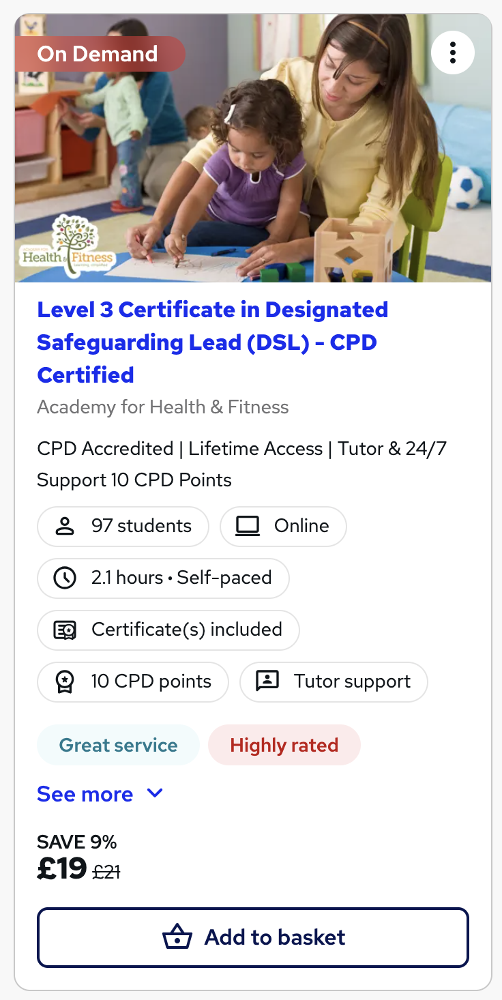

Redesigning how people find and choose courses on Reed.co.uk. The goal was simple: get people to the right course faster, and give them enough information to commit.
Context
Reed.co.uk is best known as a job board, but the platform hosts thousands of online courses — from CPD certifications to professional development. The courses marketplace is a meaningful revenue stream, but users were landing on search pages and leaving without enrolling.
My brief: find out why users weren't converting, redesign the course card to communicate value faster, and fix the search flow so people could find the right course without friction.
The problem
"I can see there are loads of courses but I can't tell which one is right for me without clicking into every single one."
User research participant, 2022Analytics showed users landing on course search pages, scrolling, then leaving without clicking anything. Session recordings and heat maps told us why — they were looking for information the cards simply didn't show.
Three things were missing:
Before and after
The original card had a title, a provider name, and a price. Nothing else. The redesign surfaces trust signals, level, duration and a direct CTA — all within the same footprint.
No rating · No level · No duration · No social proof · Generic CTA

Rating + review count · Level tag · Duration · Social proof · Discount + clear price · Add to basket CTA
Design decisions
Before designing anything, I ran a content audit across 12 competitor course platforms (Udemy, Coursera, LinkedIn Learning, Skillshare). I identified which pieces of information power-users actually look at before enrolling. That list became the spec for the new card.
Discovery flow
Phase two was the discovery flow itself — filters, sorting and browse experience. Users were struggling with filters that required too many clicks, a default sort order that felt arbitrary, and no feedback when a filter combination returned zero results.
"I added three filters and got zero results. I thought the site was broken."
Usability testing, Round 2We added live result counts to all filter options, introduced quick-filter chips at the top of results for the most common queries, and changed the default sort to "Most popular". Those three changes alone cut filter abandonment significantly.
Results
Support tickets about course level confusion dropped 35% within eight weeks of launch. Users were enrolling in the right courses first time rather than requesting refunds.
What I took away
The original card wasn't badly designed — it just withheld the information users needed to make a decision. In ecommerce and learning platforms, trust is the conversion lever. People don't buy courses because they're cheap. They buy because they believe the course will work for them.
The redesign gave users the evidence they needed to make that call without clicking in. That's the job of a product card.